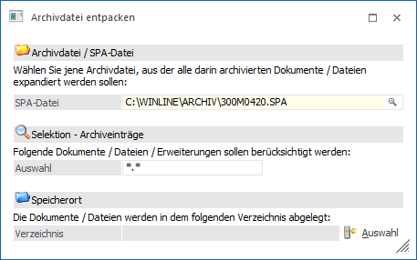

Über den Menüpunkt…
1 WinLine ADMIN
1 Archiv
1 Archivdatei entpacken
… können bestehende Archivdateien (SPA-Dateien) extrahiert werden, d.h. die Originaldateien werden wieder hergestellte (so, wie sie vor der Archivanalyse waren).
Achtung
Wenn die Option "Archivdateien in Datenbank speichern" in den Archiv - Parametern aktiviert wurde (Standard), dann werden die Archivdokumente direkt am SQL-Server in die Tabelle T495CMP (System- oder Archivdatenbank) komprimiert abgespeichert. In solch einem Fall gibt es keine Archivdateien (SPA-Dateien) und die Nutzung dieses Programms ist nicht notwendig bzw. bringt kein Ergebnis!

Archivdatei / SPA-Datei
Ø SPA-Datei
In diesem Feld kann die Archivdatei ausgewählt werden, die extrahiert werden soll. Durch Drücken der F9-Taste kann nach allen SPA-Datei gesucht werden. Eine bestehende Datei kann hier auch mit Drag & Drop in das Fenster gezogen werden.
Selektion - Archiveinträge
Ø Auswahl
Hier kann eine Einschränkung auf bestimmte Dateien vorgenommen werden, wobei auch Wildcards (?) oder Joker (*) verwendet werden können. Z.B. *.XLS entpackt nur alle Dateien mit der Erweiterung XLS, P02W4?.300M.*.SPL entpackt alle Belegformulare des Mandanten 300M.
Speicherort
Ø Verzeichnis
Durch Anklicken des Buttons "Verzeichnis suchen" kann ein Verzeichnis gewählt werden, in die alle Dateien extrahiert werden sollen. Dort werden die Dateien gemäß ihrem ursprünglichen Namen abgelegt.
Buttons
Ø Speichern
Durch Anklicken des Buttons "Speichern" bzw. der Taste F5 werden die SPA-Datei mit den gewünschten Optionen entpackt.
Ø Ende
Durch Anwahl des Buttons "Ende" wird das Fenster geschlossen.